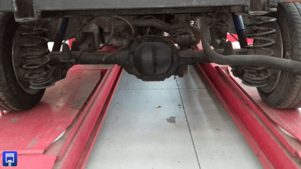

-
Definición.
La trasmisión es uno de los componentes de vehículo más complejos en diseño como al momento de realizar reparaciones.
La función principal de la caja de cambios es la de administrar el movimiento que genera el motor además de trasmitirlo a las ruedas de tracción.
Los componentes principales de una trasmisión son, embrague, caja de cambios y diferencial también conocido como calabazo.
-
Tipos de transmisión
Manual este tipo de transmisiones es la de mayor “simplicidad” además de ser muy económica, en esta el conductor administra las revoluciones del vehículo, el embrague está presente en este tipo de trasmisión.
Galeria

Automática Es una de las transmisiones con mayor cantidad de componentes internos, presenta un mayor gasto de combustible además de que los costos de reparación son más elevados a comparación de una trasmisión manual, representa mayor confort. En este tipo de trasmisión el embrague es sustituido por un componente llamado convertidor de par.
Tiptronic Este tipo de trasmisión permite que la conducción pueda ser de manera automática y en el momento deseado por el conductor se pueda cambiar de marcha como se haría en una transmisión manual, el embrague funciona por sí mismo con el paso secuencial de marchas, comúnmente es confundido con una transmisión secuencial
Secuenciales Es una trasmisión manual, pero con comando robotizado hidráulico. Su principal característica es que busca la obtención de potencia rápida.
-
Embrague.
El embrague está presente en trasmisiones de tipo manual, este componente proporciona el medio para que el conductor acople y desacople el motor de la transmisión, el embrague esta desacoplado cuando el pedal esta oprimido y acoplado cuando el pedal de embrague esta suelto.
Elementos importantes para el funcionamiento del embrague:
Plato opresor plato con resortes y con cubierta atornillando al volante que cuando se aplica el embrague, aprieta el disco de embargue al volante.
Volante de inercia atornillado al cigüeñal del motor, proporciona una superficie de fricción para el embrague y la superficie de montaje para el plato opresor.
Disco de embrague disco con recubierto de fricción en cada uno de sus lados, deslizándose en ranuras del eje de entrada de la transmisión.
Horquilla del embrague palanca que empuja el cojinete de liberación contra loa dedos del embrague del palto opresor a fin de desacoplar el embrague.
El mando del embrague se utilizan 2 tipos básicos de acoplamiento del embrague:
Control mecánicoControl hidráulico
El acoplamiento está formado por una serie de varillas o palancas o de un cable flexible que conecta el pedal del embrague con la horquilla de liberación de este. -
Potencia.
La capacidad para que el vehículo pueda mover carga contando su mismo peso se llama torque.
El torque depende de varios factores:
Presión aplicada
Coeficiente de fricción de las superficies del embrague
Área de las superficies de fricción
Diámetro interno y externo del disco impulsado
Palanca de cambios
Este componente del vehículo está en contacto directo con el conductor, este trasmite la posición por medio de varillas.
Este componente se encuentra a un lado del conductor en la parte inferior dentro de la cabina, actualmente algunos autos de clase media-alta traen consigo una paleta que se encuentra en la parte posterior del volante a la altura de los dedos al momento de conducir, estas paletas realizan la misma función que la palanca de cambios, pero un punto a favor es que lo hacen con mayor comodidad para el conductor.
-
DiferencialEl diferencial es elemento que contiene una gran cantidad de engranes con los cuales la llanta recibe el movimiento generado por el motor.
Este puede estar acoplado directamente a la trasmisión, a esta configuración se le llama trasmisión de tipo Transeje, el otro tipo es donde el diferencial está totalmente separado de la transmisión, en este caso el diferencial recibe el movimiento por medio de un eje conocido como eje cardan, este tipo es la trasmisión de tracción trasera.
